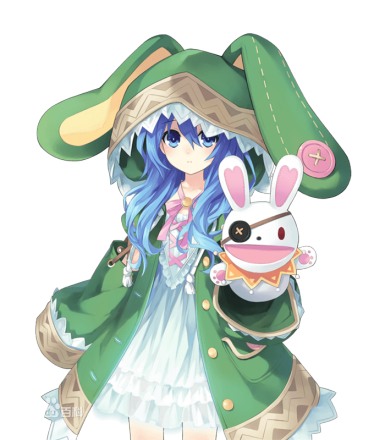

五河士道
本作男主角，都立来禅高中2年级生，16岁。年幼时曾有被双亲抛弃，而后被五河家接继的过往经历，幼年时有自杀倾向，心理承受能力较弱。对其他人绝望的感触非常敏锐，像是对抱持着绝望的十香在初次见面即被其所察觉。表面上看是一般所认知中极其普通的高中生，实际上却存有能透过接吻吸收、封印精灵的力量和能使用被封印精灵能力，遭受致命伤害时会自伤口点燃火焰，并伴随着再生、终而复活这样特殊的体质，被〈Ratatoskr〉半强迫地选为以对话沟通来避免精灵被杀害减少为目标的角色。本人最初也对这样的工作踌躇犹疑，但借由与十香与四糸乃的接触之后则渐渐变得想帮助精灵们，并决心以自己的意志担任与精灵沟通交涉的角色。虽然说话的语调经常不是很好，但却是对有为难之人与悲伤之人绝不冷漠避之并为之敞开心胸的善良青年。
夜刀神十香
外表年龄16岁，与迷团般的大爆炸一并现身于士道前的精灵少女，拥有一头及膝的黑色长发与水晶般不可思议色彩的眼睛。士道对她的第一印象，就是那可以被称为暴力一般美丽。没有包含名字在内和自己相关的一切记忆，在第二次与士道相遇后，希望士道为她命名，士道基于两人第一次见面的日子（四月十日）而命名为「十香」。由于每次出现都遭到人类攻击，使她对人类充满恐惧与敌意，一见到人就会攻击，但在与士道相遇后逐渐改变她对人的观感，变得非常喜爱人类的世界。
鸢一折纸
士道的同班同学，有着纯白如雪的短直发，经常面无表情如人偶般的少女。成绩超群绝伦，经常是全年级的榜首。在全国性的模拟考中也曾摘得首位。另外也是运动能力全能的完美少女。对他人十分冷淡，叫唤他人时基本上都是使用全名，在招待士道到自己的家过后即改以名字称呼之。另一方面也是陆上自卫队对抗精灵部队AST的成员，位阶为上士，年轻但却有高作战能力。因精灵现身之故而令双亲命丧，因此憎恨精灵此一存在的一切，展开以消灭精灵为最终目标的持续征战，但也为了达到此一目标而采取了许多鲁莽的行动。
五河琴里
本片女主角之一。男主角五河士道的义妹，14岁、双马尾的可爱少女，原作中表现色为暗红色，插画发色为血红。另一层身份是〈Ratatoskr〉的司令官。有双重性格，绑上白色缎带时就是天真开朗的「妹妹模式」，换上黑色缎带后性格就会突变成为毒舌又冷酷的「司令官模式」。但这并非真正意义上的双重人格，会因发带而改变行为方式是由于小时候因想成为令哥哥喜爱的坚强的妹妹而接受了某人的力量，却误将士道卷入，在「某人」指点下为了拯救士道而给其做了人工呼吸，自身力量也被封印，之后接受了士道迟来的生日礼物黑色缎带，并有了「只要戴着这个就是坚强的孩子」的约定，即「司令官模式」。
冰芽川四糸乃

长相宛若法国娃娃般美丽的蓝发少女，外表年纪13岁，手里拿着一个样子滑稽的兔子手偶。生性温驯而胆小怕生，几乎不敢与人直接对话，手偶「四糸奈」起初被认为是腹语术，事实上是因为四糸乃灵力链接上的手偶而存在的独立人格。除此之外四糸奈也是四糸乃的精神依靠，为避免自身的恐惧使力量失控而创造出来的坚强形象，而这也是基于四糸乃不想伤害他人的温柔。力量被士道封印后暂时住在
<佛拉克西纳斯>中，开始练习由自己主动开口说话。能操控水与寒气，因这项特质使她每次现界后周围总是倾盆大雨。
时崎狂三
突然转入来禅高中的转校生，在众人前自称精灵。平时左眼被长刘海遮挡而无法看清，身着灵装后可以看清隐藏在长发下的左眼——时钟之眼。刚开始就对士道异常的亲密，其实她的目的是为了「吃掉」士道。对杀死人命毫不抗拒，至今已被确认由狂三亲手杀死的人超过一万名以上，被认为是最邪恶的精灵，虽然崇宫真那曾经成功杀死她，但过了一阵子后又会毫发无伤再度出现，而她就一直在杀人与被杀的轮回中徘徊。虽自称自己喜欢杀人也喜欢被杀，但曾因士道的话而产生动摇。灵装是一件黑色与血色相间的哥特装〈神威灵装·三番（Elohim ）〉，发型也改为一长一短的双马尾，齐刘海遮住左眼的一半，露出来的左眼瞳孔是一个金色时钟，随能力的发动而转动。
八舞耶俱矢
操纵风的双子精灵，原精灵「八舞」只有1人，性格也完全不同。八舞耶俱矢有着橙色的头发和水银色的瞳孔,头发在脑后盘起，体态较为纤细，个性活泼，总是一种女王般高高在上高傲强势的态度，还会用一种像戏剧般的措辞说话，不过这只是为了让自己有作为精灵的威严而故意为之，在情绪激动时会变回普通的说话方式，兴奋时有「～だし」作为语尾的口癖。力量被封印之后，用普通方式说话居多。
八舞夕弦
操纵风的双子精灵，原精灵八舞只有1人，性格也完全不同。八舞夕弦是将金橙色的长发绑成三股长辫的少女，体态较为丰满，有着和耶俱矢比起来更好的身材，但常常无精打采似的眯起眼睛,与耶倶矢个性相反般的冷静温驯。灵装的枷锁位置和耶俱矢的相反，绑在左手腕和左脚腕。夕弦谈吐的方式很文静并有自己的方式，可是在说话的开头会以两个字来表示主旨（「指摘」、「赞同」等），以这样奇特的方式说话。自称是夕弦。对于传授了「吸引男性的方法」的鸢一折纸很敬仰并称之为「折纸大师」。
诱宵美九
拥有着紫银的头发和紫银的瞳孔，以及说话不紧不慢的特点。半年前被确认现界过一次除此之外没有任何相似资料，实际上从半年前开始一直维持着现界，和琴里一样属于从人类变为精灵。龙胆寺女子学院的学生，更是以让男性难以靠近的偶像身份活跃着。只是搭话的程度好感度就会降到蟑螂之下的极度厌恶男性，非常喜欢女性，即百合的精灵。对自己的声音能力有很强的依赖，担心失去之后便会一无是处。在知道五河士织（女装的五河士道）的真身是男人时大为激动，操纵成百上千的人捕捉士道。在DEM社一役中看到士道舍命去救十香，而且舍身保护用尽力量的自己而大受感动，自愿被他封印灵力，还称呼他为达令。
镜野七罪
外表年龄13岁，外貌是拥有宝石绿色的长发与眼睛的成熟美女，不过真面目却是一名肤色惨白、头发干涩而身形瘦削的小女孩。对自己原本的容貌极其没有自信，有着极容易将他人的赞扬与负面的事情联系起来进行思考的极度悲观和消极思想。因此，对于看到过她本来面貌的人，她会毫不留情地用尽计谋对对方进行社会性的抹杀，竭尽所能地想要陷害对方，有着这样危险的思想。
本条二亚
唯一知晓始源的精灵存在的人。外表18岁，实际年龄约45岁。10年前出道的人气漫画家，笔名本条苍二。五年前被艾伦捕捉，遭到DEM社囚禁。在第12卷中，DEM社为了人工制造完全的反转精灵将她空运至日本，之后，她感应到士道而与其共鸣向他求救，引发士道进一步暴走。暴走的士道打落了运输机，让她逃走。第13卷中饿倒于街头而与士道相遇。虽然其天使的能力使她能够知晓一切而极其难以攻略，但最终在同人本贩卖比赛上与士道等人平手并被士道打开心结而决定与士道约会。但此时脑中的微型显现装置发动让她想起了在DEM社所遭受的非人待遇而反转，之后被袭来的维斯考特等人夺走大部分灵结晶危在旦夕，幸得士道补充灵力而没有大碍。卷末说出自己大概在27年前成为精灵，也道出了「精灵全都是人类转化的」这一推测。
星宫六喰
宇宙中的精灵。于第十四卷登场时第一次被观测到，在此之前没有观测记录。因为使用天使的能力封印了自己的心灵而感觉不到寂寞，对在地球的生活毫无兴趣，也因此也拒绝了士道的好意。第14卷中因维斯考特使用<神蚀篇帙>发现其存在，而遭受DEM社袭击。将袭击自己DEM击败后，将陨石扔向地球。在与士道见面后，认为士道是个伪善者，加上不想卷入士道的伪善中，所以让他不要再出现自己面前，并让他转告DEM，如果下次再攻击她，她就会使用天使将地球的运作停止。灵装是宛如有星辰点缀的粉紫色旗袍〈神威灵装·六番（Eloha）〉，手套上及衣摆上皆有着星座图案，脚上则穿着犹如中世纪骑士的腿部铠甲。显现天使为钥匙天使——〈封解主（Michael）〉，是一柄顶端镶有装饰，底部则有不规则金属齿的长柄锡仗。可使用<开、闭、放、解>四种能力。
崇宫澪
第一个被观测到的精灵。长相如工艺品般五官端正，但显得无精打采面带忧郁的长发少女。30年前被维斯考特等三人创造出的存在。后在与真士相遇并目睹他为保护自己而死后开始了自己的计划，将真士转生为士道并给予他吸收灵力的能力。为了实现与真士永远在一起的愿望，不惜在三十年间扭曲无数人的人生。灵装名称不明，为装饰着花与叶的薄纱的孕妇礼服，枝条编成的头冠以及以及饰有十个宝珠的圆盘。天使有三个。花之天使〈万象圣堂〉，以万由里为核心的巨大花蕾，以散布的花粉破坏碰到的一切。树之天使〈轮回乐园〉以园神凛祢为核心的黑色巨塔，通过树根的延伸将现世侵蚀为邻界，并能自由控制邻界的一切。此天使为显现装置的原型。无之天使——没有没名字的天使，能力为将事物的存在变为无。